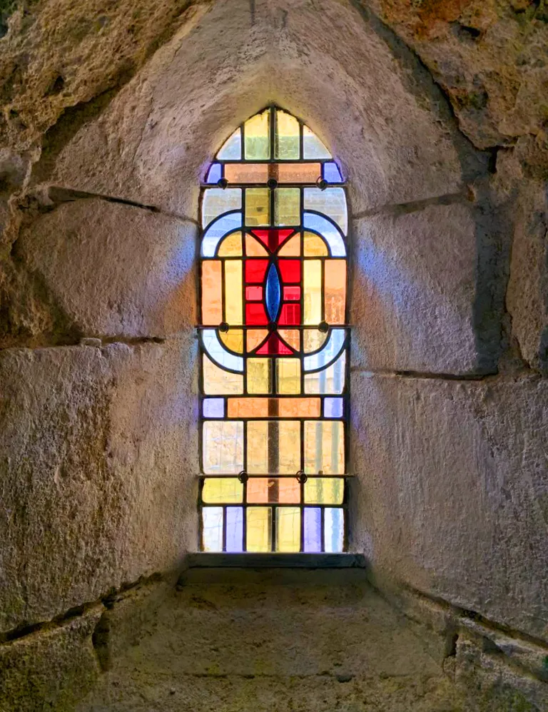

Redonner vie à l’histoire
Sauvegarde et restauration de vitraux anciens, dans le respect des techniques traditionnelles.
Patrimoine
Un patrimoine fragile, un savoir‑faire patient
Le temps, les intempéries et les chocs fragilisent les vitraux : plombs qui se détendent, verres fêlés ou manquants, peintures qui s’effacent. Chaque restauration commence par un diagnostic attentif, pour intervenir juste ce qu’il faut et préserver au maximum les éléments d’origine.
Églises, chapelles, demeures anciennes ou simples portes d’entrée : l’atelier intervient aussi bien pour les communes et les associations que pour les particuliers.
Prestations
Ce que nous faisons pour vos vitraux
-
Diagnostic et conseil
Examen de l’état du vitrail, de son réseau de plomb et de ses verres, puis préconisations et devis détaillé.
-
Dépose et repose
Démontage soigneux des panneaux, transport à l’atelier puis remise en place dans les règles de l’art.
-
Remise en plomb
Démontage complet et nouveau sertissage du panneau lorsque le réseau de plomb est trop fatigué.
-
Restitution des verres
Remplacement des pièces cassées ou manquantes par des verres choisis au plus proche de l’original.
-
Nettoyage et consolidation
Nettoyage adapté des verres, collage des fêlures et renforcement des panneaux affaissés.
-
Peinture sur verre
Reprise des motifs effacés à la grisaille, cuite au four comme autrefois, pour retrouver la lecture du vitrail.
Et après la restauration ?
Le charme d’hier,le confort d’aujourd’hui.
Verrières de protection, grillages, double vitrage : une fois restaurés, vos vitraux peuvent être mis à l’abri des chocs et des intempéries, sans perdre leur éclat d’origine.
Découvrir les protections
Déroulement
Une restauration en quatre étapes
Visite et diagnostic
Nous venons voir le vitrail sur place pour évaluer son état et vos attentes.
Devis détaillé
Vous recevez une proposition claire : interventions, délais et budget.
Travail à l’atelier
Le panneau est restauré pièce par pièce, dans le respect de son histoire.
Repose et protection
Le vitrail retrouve sa place, protégé pour traverser les années.
Un vitrail à restaurer ?
Parlez-nous de votre projet : un premier échange permet d’évaluer l’état du vitrail et les interventions nécessaires.